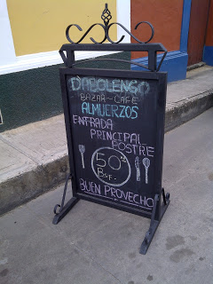
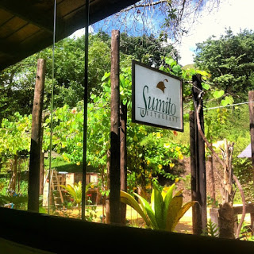
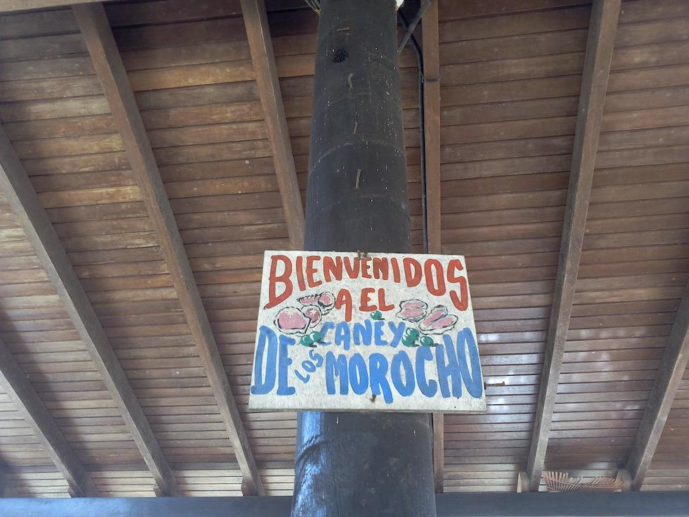

Rutas gastronómicas en Nueva Esparta -- o varias de ellas.
La capital de la Isla de Margarita no únicamente ha sido una referencia atávica en la construcción de los sabores insulares sino que también viene a dar muestras irrefutables de su presencia e importancia en el recetario margariteño. No solo en la incorporación de los productos locales y estacionales, variedad que incluso marcan una diferencia considerable con el resto de la geografía insular, siendo la capital del estado Nueva Esparta, también sus condiciones climáticas y topográficas le aseguran un acercamiento a la despensa inmediata bordeada de áreas agrícolas históricas, conucos, siembras domesticas y la arborización urbana y espontanea de la ciudad. Árbol de pan del año, merey, mamey, cotoperiz, maco, pomalaca, jobito y tantos otros frutales marcan esta despensa asuntina histórica. Todo ello, al lado de los extendidos hornos panaderos y su profunda y arraigada tradición de producción y creación panadera de la Asunción que se retrata en la historia gastronómica del país.
Restaurant D'Abolengo
La adorable profesora Gretel Silva junto a su trío de hijas construyen una referencia de sabor e historia en la Asunción ofreciendo en esta valorada y hermosa casa asuntina los sabores de la mesa mantuana y criolla. Casados en espíritu y atmósfera hay en sus platos un dialogo perfecto con la armonía de sus vidas, expresadas en sonrisa y empatía que proponen sencillez y alegría a manos llenas en cada visita, cada mesa, cada comensal.
Restaurante de Sumito
Era inevitable que en su recorrido por el país y el mundo a Sumito Estévez se le hubiese ocurrido hacer ofrenda de aprendizajes, revisiones y creaciones que se sostienen sobre la base de su crecimiento personal y profesional.

Restaurante La Repisa
Como consecuencia de los tiempos que vivimos y como crecimiento natural de una escuela de cocina, La Repisa viene a ser la propuesta gastronómica del Chef Mauricio García y Martha Lara quienes llevan adelante en nuestra isla la exitosísima empresa Área Gourmet dedicada al servicio creativo de catering y eventos desde hace algunos años.
Restaurante El Punto Criollo
Este lugar es muy llamativo para todos, pues la atención es excelente; la calidad de la comida es muy buena y los precios son razonables -- algo que todo usuario querría.
El Rincón del Morocho
En este agradable lugar que venden las pepitonas recién sacadas de la olla; las otras, madre perla, caracol, viera y preparaditos -- para quien no lo conoce, son preparados con frutos del mar -- dicen ser arodisíacos.
Un local a la orilla de la playa con sólo 6 mesas, atendido por agradables personas, orecen una fosforera que levanta muertos.
Puedes aprovechar y darte un bonito baño de playa mientras comes o ves el atardecer.